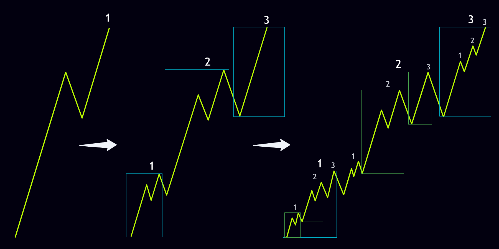
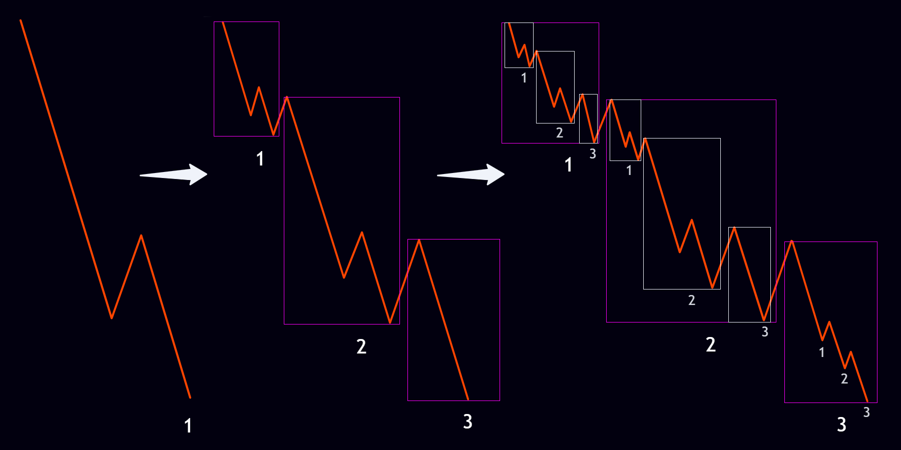
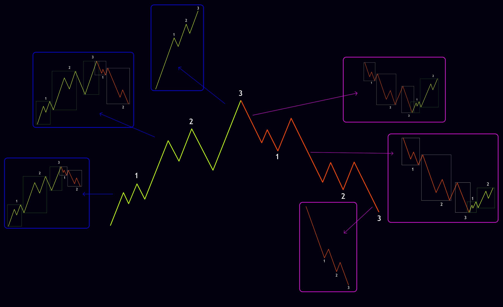
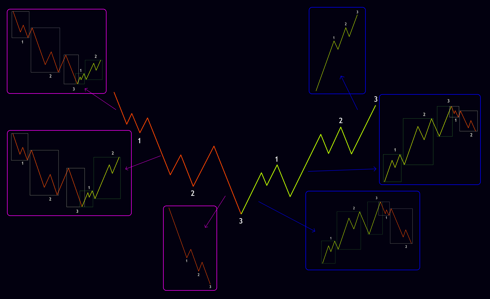
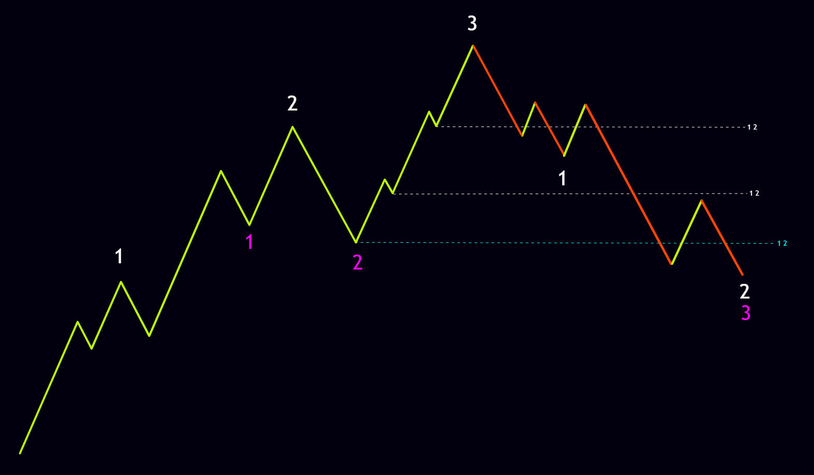
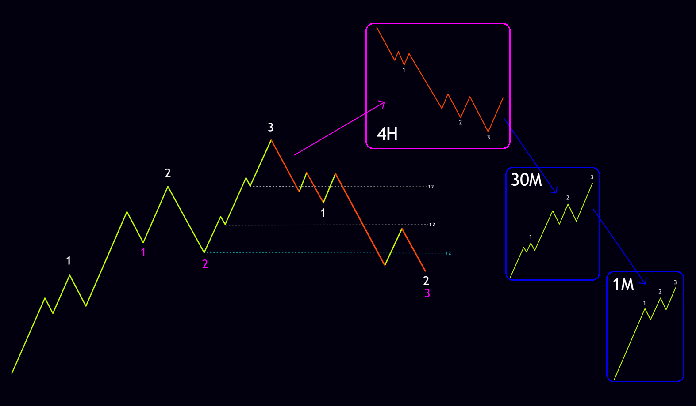

A fractal is a pattern in which every part resembles the whole. This concept comes from mathematics and is clearly visible in the price movements of financial markets. As a result, we can say that the nature of the market is entirely fractal. The simplest and most practical definition of a market fractal is therefore that smaller time frames combine to form larger time frames, while the larger time frames simultaneously exert their influence on the smaller ones. This two-way relationship means that price behavior at any scale is a reflection of behavior at other scales.
As explained in the nodes section, once three nodes are completed they can form a larger node. This is precisely what market fractals refer to. In other words, every node is itself a collection of smaller nodes, and every larger node is part of an even bigger structure. The schematics of bullish and bearish fractals look like the illustrations below.


As described in the cycle section, a positive cycle completes its uptrend with two or three nodes, then reverses and, with two or three downtrend nodes, resolves all the Pending 1-2s on the left side. According to the fractal principle, every node inside this cycle is made up of internal nodes, and each of those internal nodes likewise has its own related internal nodes. From the other direction, this positive cycle can itself be a small part of a larger market fractal. The illustration below shows the schematic of a positive cycle and the fractals of its nodes.

A negative cycle completes its downtrend with two or three nodes, then reverses and, with two or three uptrend nodes, resolves all the Pending 1-2s on the left side. Under the same fractal rule, every node inside this cycle is composed of internal nodes, and each of those internal nodes has its own related internal nodes. Looking the other way, this negative cycle can also be a small piece of a larger market fractal. The illustration below shows the schematic of a negative cycle and the fractals of its nodes.

One of the most fundamental aspects of market analysis is correctly identifying its direction. In financial markets the advice “trade with the market and avoid trading against it” is repeated constantly, but how can market direction actually be determined with accuracy? The answer lies mainly in the node sequence, yet every foundation of the N2N strategy can play a role. For example, as stated in the nodes section, once three nodes are completed the market will at least correct to the first internal Pending 1-2 of Node 3, so direction can be judged on that basis. In another example, if a bullish Node 1 has formed and the market breaks above its high, the rules of Node Symmetry lead us to expect the market to move at least the size of Node 1 in order to form a bullish Node 2; therefore we can say the market direction remains bullish. Using all the foundations of the Nod33 language, market direction can be identified.
Market direction can differ across time frames. For instance, on the daily time frame the market may be bullish while on the 30-minute time frame it is in a downtrend. Consequently it is not possible to state in absolute terms that the market is bullish or bearish; direction must be determined according to the time frame or scale being analyzed. Depending on their trading style, every trader needs to know which time frame to use for analysis and which time frame to use for entering a position.
As an example, in the schematic below if we assume the left-side uptrend that ended with three nodes is on the weekly time frame, the node rules tell us the market will at least correct to the first internal Pending 1-2 of the left-side Node 3. We can therefore say that market direction on the weekly time frame has shifted from bullish to bearish.

Yet the weekly time frame is mainly useful for investing and longer-term swing trades, not for medium-term swing traders, day traders, or scalpers. It would therefore be wrong to conclude that from now on only short positions should be sought. Looking at the right-hand schematic of the market, we see that in order to resolve the first internal Pending 1-2 of Node 3 on the weekly time frame the market has formed a large Node 1. According to the fractal rules of nodes, this large Node 1 itself consists of three smaller internal nodes on the 4-hour time frame. If we drop one more fractal level, each of those 4-hour nodes is made up of three nodes on the 30-minute time frame, and each of those 30-minute nodes is in turn made up of three nodes on the 1-minute time frame. This shows exactly how market fractals operate, and why traders with different styles can see market direction differently from one another. As the schematic illustrates, the market eventually resolves the main Pending 1-2 of Node 3 to complete its sequence, yet according to Time Symmetry and the scale of the weekly time frame this move can be expected to take several years. Day traders and scalpers must therefore choose a lower time frame for determining Market Direction while still keeping in mind that the overall market direction is bearish and that the market may return to its downward path once the first Pending 1-2 is resolved.

A deep understanding of the market’s fractal nature helps a trader see both the big picture and the fine details. In the N2N strategy a large part of accurate analysis depends on the ability to recognize the fractal scale and Market Direction. When these two elements are identified correctly, the probability of entering trades that align with the main market trend rises and the risk of counter-trend trades falls noticeably.